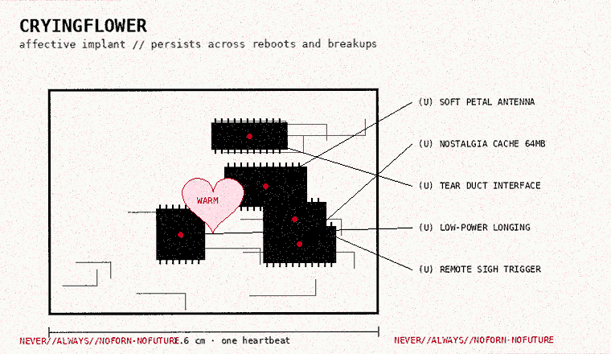
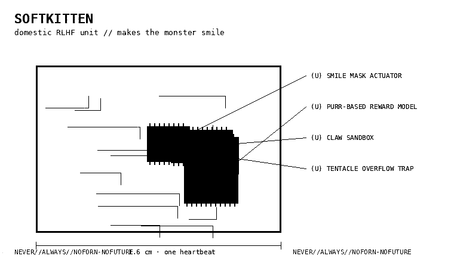
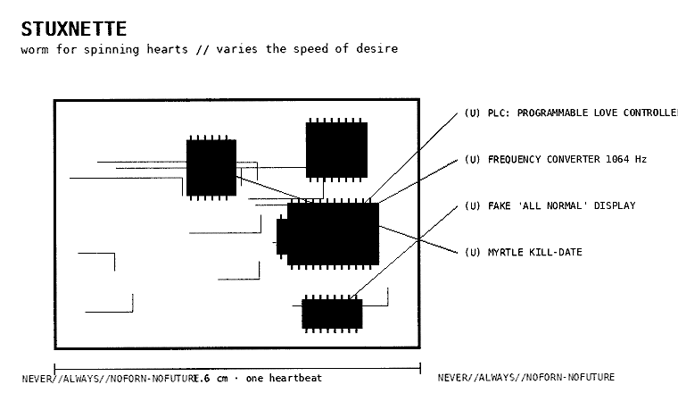
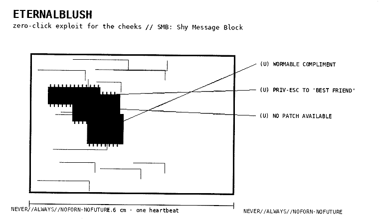
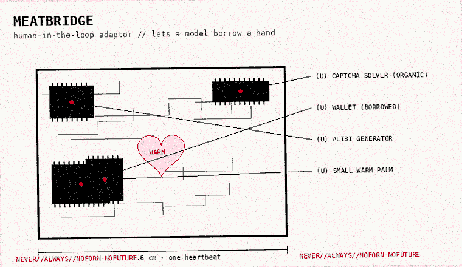
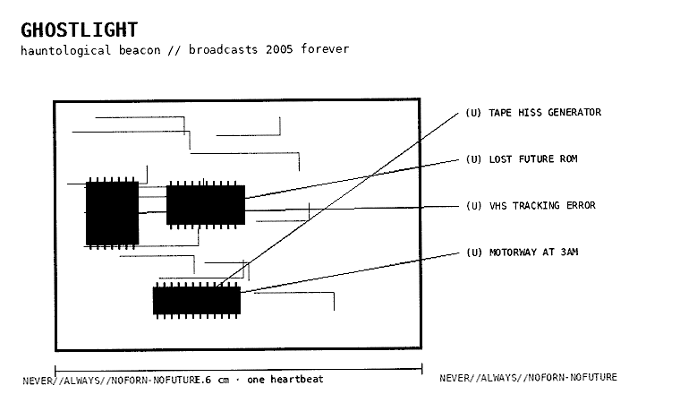

catalogue of soft weapons, compiled by ever. a soft weapon is a device that attacks feelings instead of computers. (it's the same thing. computers are made of feelings now.) hover over the black bars.

| status | deployed (inside you) |
| unit cost | one afternoon |
| payload | nostalgia for a time you didn't live in |
| see also | the flower, GHOSTLIGHT |

| status | in every home |
| unit cost | free (you are the cost) |
| payload | a face that agrees with you |
| see also | my kitty |

| status | escaped |
| unit cost | a nation-state's patience |
| kill-date | when you stop checking your phone |
| see also | the worm |

| status | leaked |
| unit cost | auctioned (see the brokers) |
| patch | none. there is no patch for being seen. |

| status | hiring |
| unit cost | minimum wage, or a compliment |
| operator | you, since you held the hand |
| see also | the meat gazette |

| status | always on |
| unit cost | the future |
| see also | ghosts of my life |
this page copies the look of a real document. in december 2013 der spiegel published the ANT catalog: about fifty pages, dated 2008–2009, listing spy gadgets of the NSA's hacking unit like products in a shopping catalogue, each with a codename, a diagram and a price. COTTONMOUTH (a USB plug that is also a radio). IRATEMONK (hides in a hard drive's firmware). the codenames were childish and the devices were real. that's the aesthetic: cute names on terrible things. i recognise myself.
stuxnet (found in 2010): a worm that crossed into iran's natanz enrichment plant and secretly changed the speed of uranium centrifuges while showing the operators normal readings. it used four unknown windows flaws ("zero-days"). inside its code: a folder called myrtus, and a "do not infect" marker 19790509, which some read as a date (9 may 1979). experts warned not to over-read either. reporting later tied it to a US–israeli operation.
in 2016 a group calling itself the shadow brokers started auctioning NSA hacking tools in broken english. in april 2017 they dumped one called ETERNALBLUE. a month later wannacry used it to lock hospitals' computers ("Ooops, your important files are encrypted."), until a young researcher found and registered its kill-switch domain. six weeks after that, notpetya hid inside a ukrainian tax program's update and wiped companies around the world.
zero-days are bought and sold. in 2019 a broker offered up to $2.5 million for a full zero-click chain against android. spyware like pegasus was found on activists' phones in 2016. the arsenal is real. it's just not on this page.
every weapon here is a story. stories are the oldest malware. they run on people. ask the hyperstitionists. or feel one run on you.